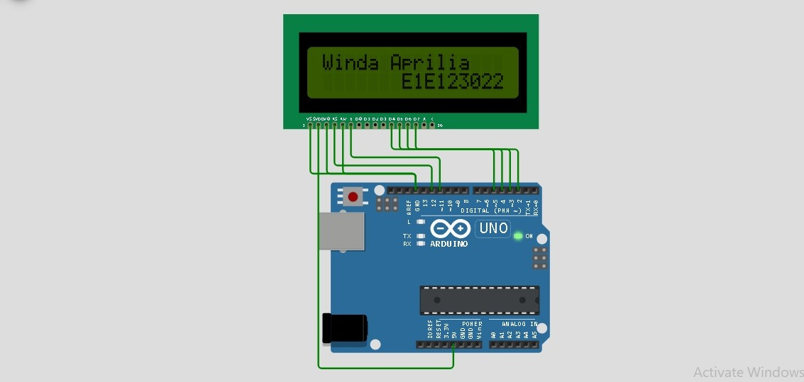
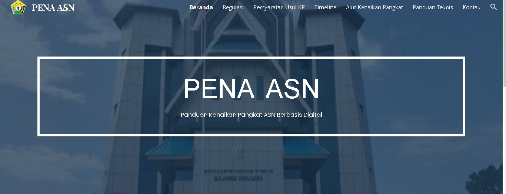

Saya adalah mahasiswa Teknik Informatika yang memiliki ketertarikan pada pengembangan teknologi, khususnya di bidang web development dan sistem berbasis jaringan. Saya telah mengerjakan beberapa proyek seperti pembuatan website, simulasi jaringan menggunakan Cisco Packet Tracer, serta proyek mikrokontroler berbasis Arduino. Melalui pengalaman tersebut, saya terbiasa memahami konsep dasar pemrograman, logika sistem, serta bagaimana mengimplementasikannya ke dalam sebuah solusi sederhana yang fungsional.
Selain itu, saya juga aktif sebagai relawan di KSR PMI Kota Kendari, yang membantu saya mengembangkan kemampuan kerja sama tim, komunikasi, serta tanggung jawab dalam berbagai situasi. Pengalaman ini membentuk saya menjadi pribadi yang disiplin, adaptif, dan mampu bekerja baik secara individu maupun dalam tim. Saya memiliki semangat untuk terus belajar dan mengembangkan keterampilan di bidang teknologi agar dapat memberikan kontribusi yang bermanfaat di masa depan.
Beberapa bidang yang sedang saya pelajari dan kembangkan selama kuliah
Membangun Tampilan Website menggunakan HTML, CSS, dan dasar JavaScript
Simulasi Jaringan Menggunakan Cisco Packet Tracer dan memahami Konsep dasar Networking
Simulasi proyek mikrokontroler seperti LED, push button, dan LCD


Website Knowledgebase yang berisi tentang syarat syarat mencakup divisi PKN di KPKNL Kota Kendari

Simulasi WOkwi untuk menampilkan Nama dan NIM di LCD, Sebagai Tugas Proyek Mata KUliah mikrokontroler

Website sederhana tentang alur kenaikan pangkat di BKD Provinsi Sulawesi Tenggara